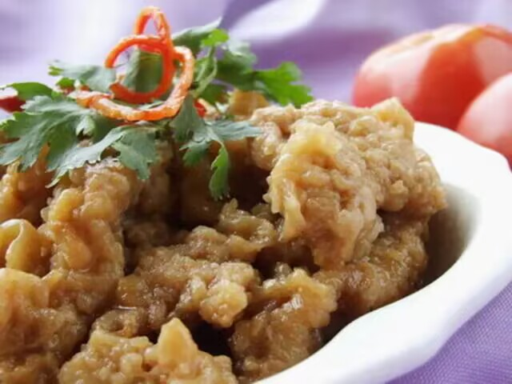

全部分类
热门搜索
笋子炒鸡


笋子炒鸡是一道色香味俱全的汉族名菜，属于豫菜系。把鸡腿肉用配料腌制半小时。锅里放底油，撒一把花椒爆香，把共椒取出。把腌制好的鸡腿肉倒入锅内，翻炒五分钟，倒入一碗清水，焖十分钟。焖鸡腿肉的时候，把笋子切好，等到鸡肉开始出油了，把笋子放进锅里炒熟即可。
扣碗酥肉 扣碗酥肉是一道河南安阳的汉族名菜，属于当地饮食的代表菜品，此道菜特点就是香酥、嫩滑、爽口、肥而不腻，不喜欢吃辣椒的朋友一定会喜欢的。扣碗酥肉选材是在猪的上半身，因为这里的肉比较嫩，肥瘦相煎。
炸八块炸八块，又名八块鸡，是河南省汉族传统名菜，属豫菜系。它由童子鸡、鸡肫、鸡肝、淀粉（蚕豆）等食材烹制而成。本地菜馆颇有韵味的“干搂炸酱不要芡，一只鸡子剁八瓣”的响堂报菜语，后半句就是指此菜而言
鲤鱼跃龙门
鲤鱼为黄河名鱼，自古就有"洛鲤伊鲂，贵似牛羊"之说。肉嫩味美，营养丰富，闻名中外。鲤鱼跳龙门，造型优美，寓意吉祥。只见烹制好的鲤鱼，昂首盘中，栩栩如生，仿佛欲跃而起。加之有青山衬托、状如门阙，颇富山野情趣。食之味美无穷。
汴京烤鸭汴京烤鸭，又名东京烤鸭，是河南省开封市的一道传统名菜，也是豫菜十大名菜之一；该菜品的制作原料主要有填鸭、蜂蜜、京冬菜等，由北宋延续，历史悠久。 汴京烤鸭皮酥脆，肉嫩香，色泽柿红。对于体内有热及素体虚寒的人均可食用。选用的鸭子个大皮薄、肥嫩丰满，使烤出的鸭子色泽红润、皮脆肉嫩、丰腴醇香、肥而不腻，最终汴京烤鸭成为开封宴席上的珍品。